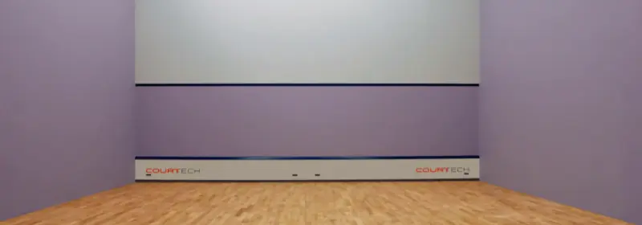
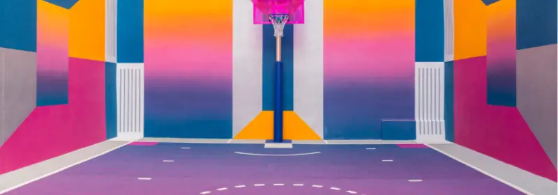
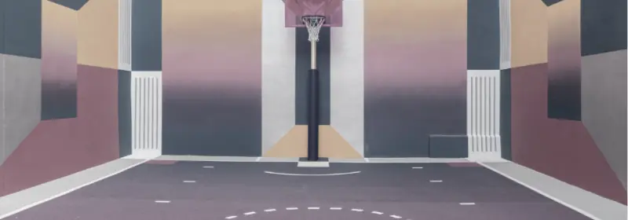
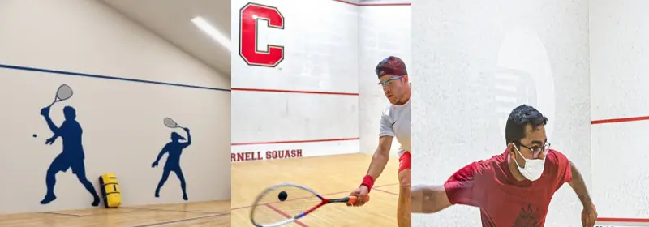
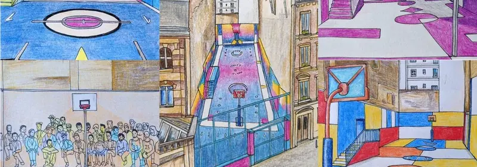

Let’s Make Squash Courts Colourful!
Originally, all squash courts were white and all kit (the clothes) had to be white too, including the shoes. Around the 1990s courts were allowed to be painted pastel and the rules were loosened to include pastel clothes too.
So why not take things to the next level? Why not make squash courts more inviting, more interesting? Traditionalists will argue that it will make it harder to see the ball, and that could be true for some situations, but they said the exact same thing about coloured walls and clothes. “If the ball passes across the body of a player wearing dark clothes, then they will lose sight of the ball!”. And yet, plenty of people wear dark clothes to play squash and nobody complains of losing sight of the ball. I suspect the same will happen with patterned walls.
An interesting colour combination, don't you think?
So what exactly am I suggesting?
Firstly, I am suggesting removing the rule that both the sidewalls need to be the same colour and also a consistent colour. Pastel colours should still be used, because I do believe that dark colours will make it difficult for the ball to be seen. But why can’t we have patterns or interesting designs? A glass wall, be it the back wall or side wall, has a multitude of colours and shapes behind it, yet the human eye is able to concentrate on the ball pretty well.
WOW, that's a pretty eye-catching design.
The Pigalle Duperré is a basketball court in Paris, France. At first glance you might hate it. It’s bright, it’s colourful and it stands out. “But Phillip, the walls of a basketball court are not used like they are on a squash court!”. That’s true, but so what? “The colours are too bright and contrasting!” I agree, so let’s use less bright colours and less contrasting colours then. What I also really like is the gradient floor, that looks pretty cool.
Not an exact representation because the darker areas are still there, but you get the idea.
Two years ago, I posted an image I found an image of a court with dark silhouettes on the side walls. The general consensus in the comments was that it was disliked, but I feel that has more to do with the darkness of the figures than the concept. We have been putting larger logos on squash walls for a long time, so let’s not pretend it’s not possible! The image below shows the silhouettes I was talking about, Cornell University court and We Are Open squash in New York.
Not an exact representation because the darker areas are still there, but you get the idea.
We having patterned and colourful squash courts suddenly bring in hundreds of juniors? Of course not and I’m not suggesting that. I am suggesting that we see those white, boring walls as an opportunity to make squash seem less boring. Squash being inside has some advantages (mostly that we can play all year round), but it also means that those plain white walls can seem boring to people who have never played.
Get The Community Involved With The Design
One of the coolest parts of the Pigalle Duperré project was the design evolution. Imagine you got local schools involved in designing the court. Wouldn’t they want to come and see, then use it? What about he juniors who currently play? How cool would it be if they were allowed to decide what it looked like (with adult guidance, off course!). The collaboration with the community, the interaction with the users and the publicity generated would be so valuable for the facility. I highly recommend you visit the Resource Links at the bottom of this article.
Various ideas used to explore the possibilities of the basketball court.
What Are You Waiting For?
I love white walls on squash courts. I love that pureness, and especially the contrast between the sweat, blood and tears of the performance, and the walls. But we need to keep squash fresh and this could be one way to keep juniors interested. We as a community are fighting for their time. ANYTHING, and I mean ANYTHING that we can do to make somebody say “Oh, that looks cool, let’s try it” about squash is worth trying.
Resources
Pigalle Duperré – A colourful basket ball court.
The Artistic Evolution of Pigalle Duperré – Getting people involved!
WeAreSquash – Squash Clubs and Programme in New York, USA
Silhouettes Side wall court – My Instagram post
Final Thoughts
I am not suggesting that every court be painted like this. Squash has to be dragged, biting and kicking in some cases, out of the past and into the future. Outdoor squash is coming, but let’s not neglect the indoor courts either.
Continue Reading
• Previous: Solo Squash Hitting Is My Meditation
• Next: Squash Shoes Might Be More Important Than Squash Rackets!
• Random: Take A Chance!
• Popular: Stop Playing Your Favourite Squash Shot